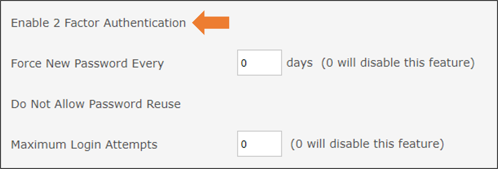
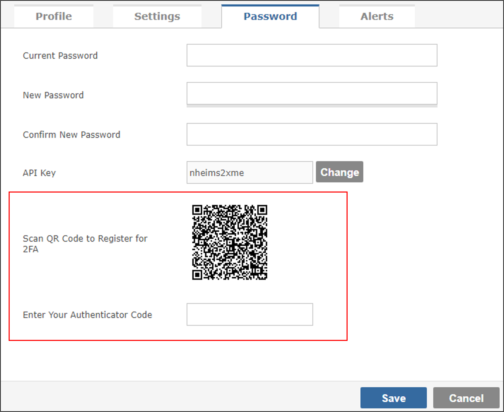
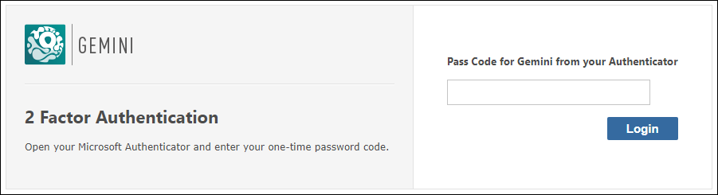

With the release of Gemini 7.4, Countersoft introduced 2-factor authentication in Gemini through integration with standard authenticator apps.
As a member of the Gemini Administrator group, navigate to Configure Gemini...People...Options. Check the "Enable 2 Factor Authentication" checkbox.
You cannot force users to use 2FA, if you did they could never login without 2FA and set it up, and by its very nature nobody can set 2FA up for someone else.
When 2FA is enabled at a system level, users who login without having already set up 2FA are automatically taken to the password tab of the User Profile page and given the option to enable it.
In theory the QR code can be scanned with any authenticator app. We tested Microsoft's and Google's, which are both easily obtained. And once you scan the code, enter the number that your authenticator app provides.
Gemini stores the user's encrypted details, and once 2FA has been set up by the user, the login flow changes. Thereafter, every time the user logs in with their username and password, they must also login with the code generated by their authenticator app.
The 2fa QR code is generated every time the user goes to the password tab on the profile change, so they can change it at any time after the have logged in.
If you disable 2FA at a system level, users will not be shown the 2FA authenticator login prompt and they will log in with just their usernames and passwords.
Please note: The 2FA details will be deleted for any user that saves their user profile while 2FA is disabled.
You cannot have 2FA in Gemini if you use Windows authentication, it is an illogical combination. Windows authentication is not just about Identity, it is also about the ease of Single Sign-on. If you want MFA you should enable it at the network level before users get to their applications.
Gemini's 2FA has no bearing on its Auth0 integration, which is capable of implementing the same functionality. It is just easier for customers to enable 2FA in Gemini and it is one less thing for our customers to worry about.
We think it is confusing to have 2 different codes on the same screen. Scanned QR codes are much better UX, they have been around for decades, and there are no authenticator apps that don't have the option to use them.
Yes - see the point above about disabling 2FA. If you disable 2FA at a system level, when a user saves their profile any 2FA data stored against their user account is deleted.